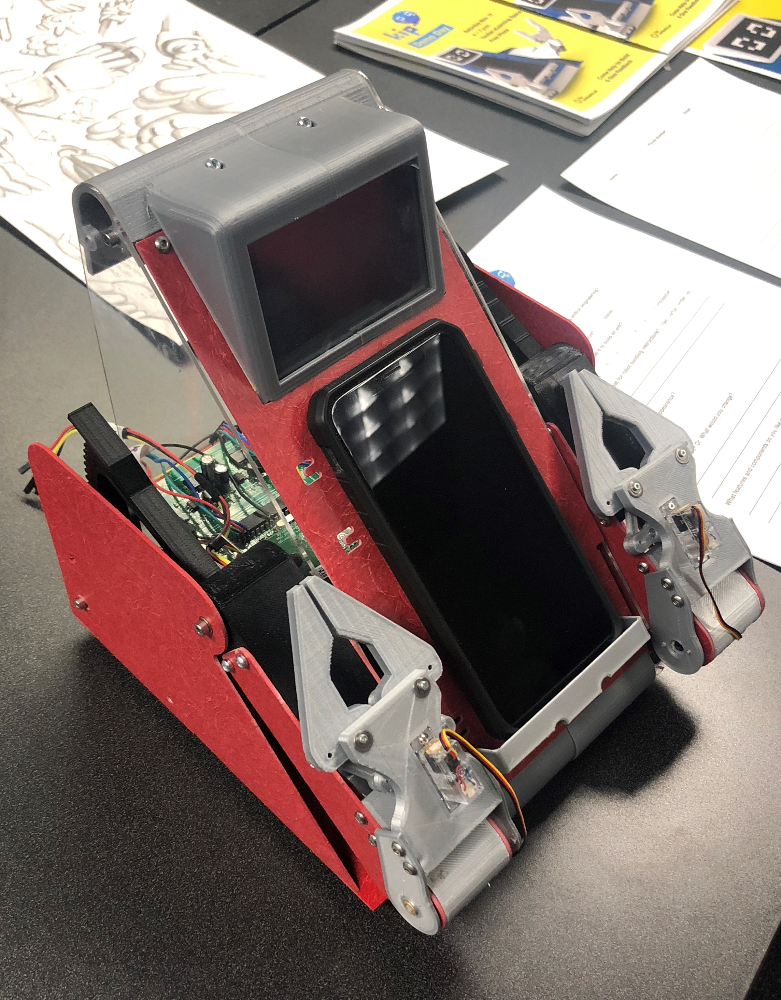
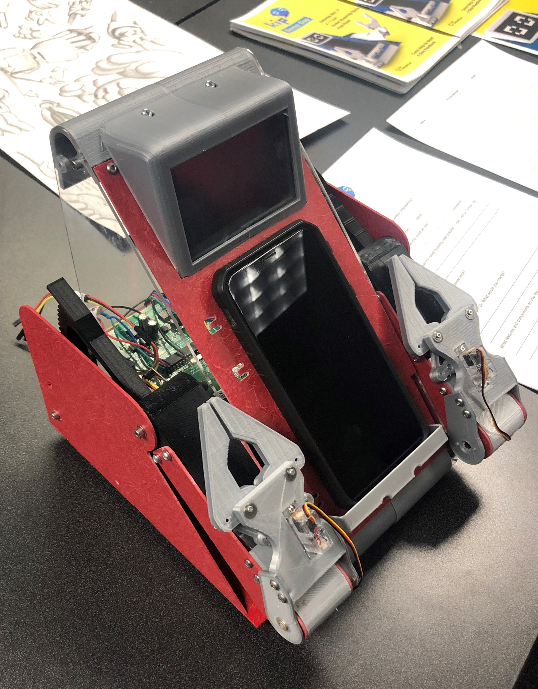

Portfolio
KiP V1 [2018]
What is KiP?
- KiP is an Open-Source Educational Robot
- KiP was designed to be a low-cost and fully programmable and modular robotics system for middle schoolers, high schoolers, and curious adults.
- KiP uses a Raspberry Pi that communicates with a custom stepper motor driver PCB.
- KiP is controlled with a mobile phone app controller.
What I worked on:
- Mechanical design of actuators, grippers, and display.
- Server software backend running on the Raspberry Pi with mobile app controller integration.
Skills: Mechanical Design, Solidworks, 3D Printing, Python, laser cutting.
 

KiP V2 [2019]
What changed from V1?
- Next iteration of KiP is nearly fully 3D printed.
- Improved stepper motor driver PCB.
- New version is lower cost and more approachable.
What I worked on:
- Designed the robot in Solidworks. 3D printed, assembled, and tested robot systems.
- Programmed stepper motor driver PCB (Atmega2560) firmware for controlling stepper motors speed and position with I2C communication to the Raspberry Pi. (C++)
- Programmed the HTTP server running on the Raspberry Pi as well as I2C interface and mobile app UDP communication. (Python, node.js)
- Assisted in the programming of the KiP controller mobile app in React Native.
- Presented the robotics system to a group of primary and middle school students at an Arizona Science Center Summer Camp to gain user feedback.
Skills: Mechanical Design, Solidworks, 3D Printing, Python, AVR C++ Embedded Programming, node.js.
HPE/GS KiP [2019]
What is HPE/GS KiP?
- HPE/GS KiP was a spinoff project from the KiP robot. The project was in partnership with Hewlett-Packard Enterprise and the Girl Scouts of America.
- The aim of the project was to redesign the Robotics badge curriculum for the Girl Scouts of America. The technical outcomes of the project were to design a version of KiP that integrated with an ESP32 based board that HPE designed for underprivileged schools.
What I worked on:
- Designed the robot in Solidworks.
- Coordinated design of the KiP “Hat” PCB for HPE’s PCB.
- Programmed the firmware for HPE’s PCB to control the stepper motors on the robot.
- Wrote HPE/GS KiP API for young children to program robots.
- Programmed a demo station drawing game using OpenCV on a Jetson.
- Conducted extensive user feedback testing at the Girl Scouts of America convention.
Skills: Mechanical Design, Solidworks, 3D Printing, Expressif C++ Embedded Programming, Python, OpenCV, Digital Electronics
VELOS [2020]
What is VELOS?
- VELOS was a proposal for the 2020 NASA BIG Idea Challenge.
- VELOS is a system for exploring Permanently Shadowed Regions (PSRs) of the lunar surface.
- The system is comprised of a spring-loaded launcher system that launches networked science probes up to 100m on the lunar surface.
- VELOS won the “Innovation Award” at the BIG Idea Forum
What I worked on:
- Designed the launcher mechanical system in Solidworks including novel spring launcher plunger and release assembly.
- CNC Machined and assembled the launcher.
- CNC Machined the probe PCB HDPE enclosure and high porosity carbon impact absorption foam.
- Designed the auxiliary VELOS loading machine.
- Conducted extensive device testing and iterative modifications to reach launching capacity. Conducted Cryo-vacuum testing to advance device to TRL 4.
Relevant Links:
- [ARTICLE] ASU students’ lunar exploration system is a finalist in NASA competition
- [VIDEO] 2020 BIG Idea Forum Presentation Arizona State University
Skills: Mechanical Design, Solidworks, 3D Printing, Fusion360 CAM, CNC Programming and Milling, Lathe Turning, Motor and transmission selection, validation testing (vacuum and cryogenics).
Training Landmine Device [2021]
What is this Training Landmine Device?
- The Landmine Training Device was designed to assist the USMC with training soldiers to locate landmines.
- The device imitates a subterranean landmine and “detonates” a harmless powder to simulate an explosion during wargames training.
What I worked on:
- Designed mechanical landmine system in Solidworks. Including strain guage selection and high-pressure pneumatic plumbing and solenoid system.
- Conducted subterranean soil stress analysis calculations to determine landmine loading underground with different vehicle conditions.
- Manufactured and fabricated three training landmine units for the USMC and NSIN to demonstrate and provide feedback.
Relevant Links:
Skills: Mechanical Design, Solidworks, High pressure pneumatics, Welding, Soil Stress Analysis, Mechanical Strain and Deformation Analysis, Strain Guage testing, Validation testing.
Project Spyral [2021]
What is this Project Spyral?
- Spyral is an internal Luminosity Lab project to design an active tripod for hobbyist astrophotography.
What I worked on:
- Designed a version of Spyral that is constructed of rigid sheet metal in Solidworks.
- Programmed the stepper driver firmware backend. (Utilized the same custom PCB stack as KiP)
- Programmed scripts for determining the altitude and azimuth position of celestial objects relative to the tripod camera position based on geolocation and time using Astropy.
- Worked with industrial designer on designing a case enclosure.
- Worked with React app developer and backend developer on hardware-software integration.
Skills: Mechanical Design, Solidworks, Sheet metal design, 3D Printing, Stepper Motors, AstroPy, Python, AVR Embedded C++, Digital Electronics.
Project Spark [2021]
What is this Project Spark?
- Project Spark is an engineering project to advance solid oxide microtubular fuel cell (μSOFC) reactors in low volume, low mass, high power mobile power generation applications. The fuel cells use any hydrocarbon fuel to chemically generate electricity.
- The project is in partnership with Dr. Ryan Milcarek’s research on SOFC technology. The device designed brings the fuel cells out of the lab environment and brings the technology closer to consumer and military applications.
What I worked on:
- Designed the fuel cell reactor for manufacturing in Solidworks.
- Coordinated with ANSYS simulation team for thermal and CFD simulations to ensure critical temperature ranges reached in reformer tubes and fuel cell anode. Extracted thermal data from existing thermodynamic heat of formation models.
- Manufactured and fabricated reactor device.
- Conducting lab testing of reactor device to generate at least 30 Watts. (ongoing project)
Skills: Mechanical Design, Solidworks, Fusion360, CNC Programming and Machining, Welding, Thermal Analysis (up to 1000°C internal temperatures), Hydrocarbon Combustion Thermodynamics, Electrical Power Systems, Fluid Analysis.